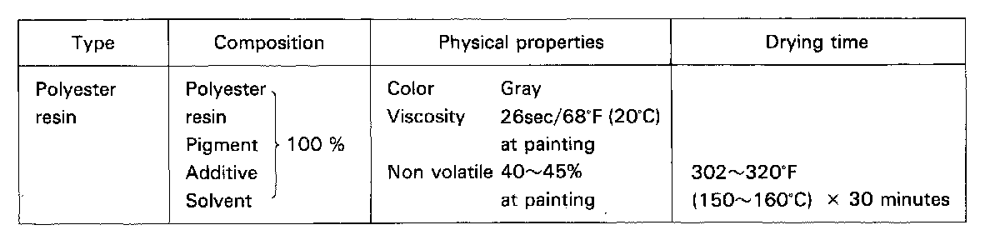
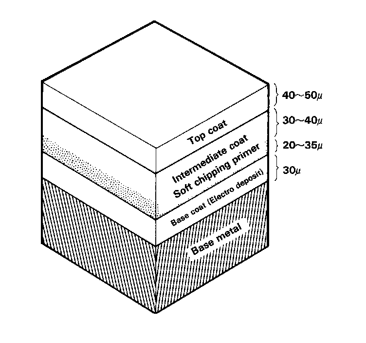

General
GeneralThe removal of paint and undercoating by stones and gravel immediately exposes metal to the atmosphere, causing it to rust. The thickness of this rust increases if the process continues unchecked. The soft chipping guard primer protects against damage due to the impact of flying objects. The purpose of this guide is to provide information you will find useful when repairing damage to the protective coating. Refer to the Soft Chipping Primer Undercoating Diagram.

The soft chipping guard primer is applied over the E.D. (Electrostatically Deposited) primer. It is followed by guide coating and top coating.

The soft chipping guard primer produces a smooth surface when dry. It should be sprayed so the thickness of the protective film is 20 microns.